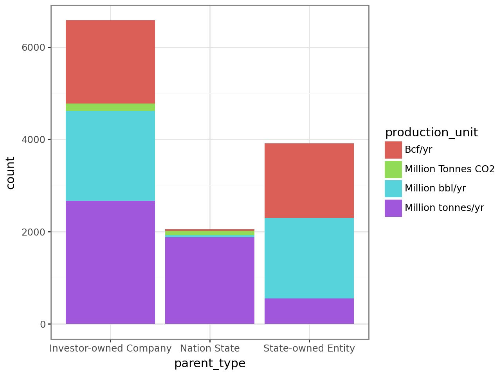
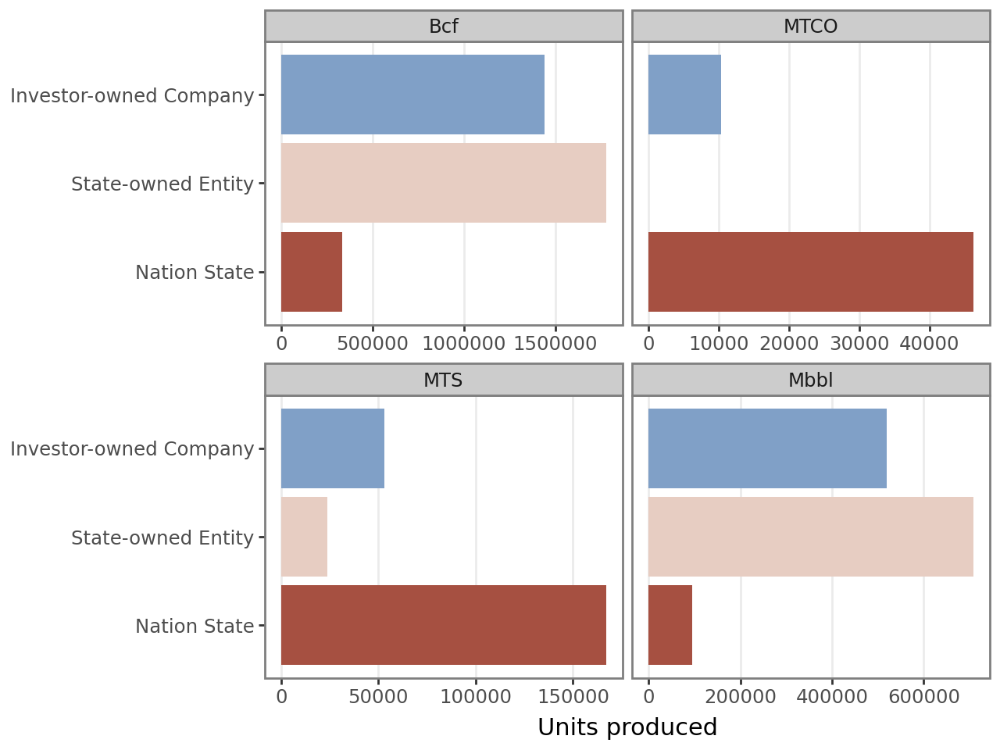

import polars as pl
import pint
from great_tables import GT, html
import plotnine as pn
med_gran = pl.read_parquet("./data/emissions_medium_granularity.parquet")
ureg = pint.UnitRegistry()
ureg.define("Million_bbl = 1e6*bbl = Mbbl")
pn.theme_set(pn.theme_bw())Loaded up polars and the parquet file containing med-granularity production & emissions data from Carbon Majors (https://carbonmajors.org/Downloads). Let’s take a peek at the data, first in terms of counts of rows from different parent types, commodities, and units.
med_gran.describe()
slim_counts = med_gran.select(
pl.struct(['parent_type', 'commodity', 'production_unit']).value_counts(sort=True)
).unnest('parent_type').unnest('parent_type')
print(slim_counts)shape: (23, 4)
┌────────────────────────┬────────────────────┬────────────────────┬───────┐
│ parent_type ┆ commodity ┆ production_unit ┆ count │
│ --- ┆ --- ┆ --- ┆ --- │
│ str ┆ str ┆ str ┆ u32 │
╞════════════════════════╪════════════════════╪════════════════════╪═══════╡
│ Investor-owned Company ┆ Oil & NGL ┆ Million bbl/yr ┆ 1945 │
│ Investor-owned Company ┆ Natural Gas ┆ Bcf/yr ┆ 1802 │
│ State-owned Entity ┆ Oil & NGL ┆ Million bbl/yr ┆ 1745 │
│ State-owned Entity ┆ Natural Gas ┆ Bcf/yr ┆ 1617 │
│ Investor-owned Company ┆ Bituminous Coal ┆ Million tonnes/yr ┆ 677 │
│ … ┆ … ┆ … ┆ … │
│ State-owned Entity ┆ Metallurgical Coal ┆ Million tonnes/yr ┆ 126 │
│ Nation State ┆ Cement ┆ Million Tonnes CO2 ┆ 95 │
│ Nation State ┆ Oil & NGL ┆ Million bbl/yr ┆ 43 │
│ Investor-owned Company ┆ Anthracite Coal ┆ Million tonnes/yr ┆ 38 │
│ Nation State ┆ Natural Gas ┆ Bcf/yr ┆ 33 │
└────────────────────────┴────────────────────┴────────────────────┴───────┘Polars works pretty nicely with holoviz to compare counts across the groups we defined above.
(
pn.ggplot(slim_counts, pn.aes(x="parent_type", y="count", fill="production_unit"))
+ pn.geom_col()
)
Let’s instead aggregate the production records, and keep the different units that Carbon Majors reports in. If they didn’t want to attempt unit conversion, I won’t either for purposes of this example. In particular, their methodology for calculating cement production (worth reading more into here) in terms of CO2 emissions complicates conversion.
units_mapper = {
"Million tonnes/yr": "MTS",
"Million Tonnes CO2": "MTCO",
"Million bbl/yr": "Mbbl",
"Bcf/yr": "Bcf"
}
parent_enum = pl.Enum(
['Nation State', 'State-owned Entity', 'Investor-owned Company']
)
med_gran_agg = med_gran.group_by(['parent_type', 'commodity', 'production_unit']).agg(
pl.col("production_value").sum().alias("sum_prod_val"),
pl.col("total_emissions_MtCO2e").sum().alias("sum_mtco2e")
).with_columns(
pl.col("production_unit").replace(units_mapper)
).sort(
pl.col("production_unit", "commodity")
).with_columns(
pl.col("parent_type").cast(parent_enum)
)
(
GT(med_gran_agg, rowname_col="commodity", groupname_col="parent_type")
.tab_header("Total Carbon Majors production & emissions")
.tab_stubhead("")
.fmt_integer(['sum_prod_val', 'sum_mtco2e'])
.cols_label(
sum_prod_val="Produced / yr",
sum_mtco2e=html("Emitted<br>(MtCO2e) / yr"),
production_unit = "Units"
)
)| Total Carbon Majors production & emissions | |||
|---|---|---|---|
| Units | Produced / yr | Emitted (MtCO2e) / yr |
|
| Nation State | |||
| Natural Gas | Bcf | 335,678 | 24,468 |
| Cement | MTCO | 46,323 | 23,161 |
| Anthracite Coal | MTS | 16,179 | 47,205 |
| Bituminous Coal | MTS | 101,775 | 276,231 |
| Lignite Coal | MTS | 22,393 | 29,989 |
| Metallurgical Coal | MTS | 24,553 | 72,839 |
| Sub-Bituminous Coal | MTS | 2,095 | 4,230 |
| Oil & NGL | Mbbl | 95,475 | 38,073 |
| State-owned Entity | |||
| Natural Gas | Bcf | 1,778,095 | 129,606 |
| Bituminous Coal | MTS | 7,745 | 21,022 |
| Lignite Coal | MTS | 1,201 | 1,608 |
| Metallurgical Coal | MTS | 202 | 600 |
| Sub-Bituminous Coal | MTS | 14,460 | 29,196 |
| Oil & NGL | Mbbl | 709,077 | 282,764 |
| Investor-owned Company | |||
| Natural Gas | Bcf | 1,441,634 | 105,081 |
| Cement | MTCO | 10,316 | 6,521 |
| Anthracite Coal | MTS | 100 | 291 |
| Bituminous Coal | MTS | 12,347 | 33,512 |
| Lignite Coal | MTS | 8,284 | 11,095 |
| Metallurgical Coal | MTS | 4,760 | 14,120 |
| Sub-Bituminous Coal | MTS | 8,106 | 16,367 |
| Thermal Coal | MTS | 19,302 | 45,734 |
| Oil & NGL | Mbbl | 519,851 | 207,305 |
parent_cmap = {
'Nation State': '#A65041',
'State-owned Entity': '#E7CDC2',
'Investor-owned Company': '#80A0C7'
}
med_gran_viz = med_gran_agg.group_by(['parent_type', 'production_unit']).agg(pl.col("sum_prod_val").sum())
(
pn.ggplot(med_gran_viz, pn.aes(x="parent_type", y="sum_prod_val", fill="parent_type"))
+ pn.facet_wrap("production_unit",scales="free_x")
+ pn.geom_col()
+ pn.coord_flip()
+ pn.scale_x_discrete(name="")
+ pn.scale_y_continuous(name="Units produced")
+ pn.scale_fill_manual(values = parent_cmap)
+ pn.guides(fill = "none")
+ pn.theme(panel_grid = pn.element_blank(),
panel_grid_major_x = pn.element_line(color="#EBEBEB"))
)